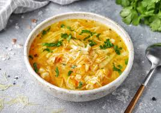

|  |
- Подготовьте необходимые продукты для куриного супа с вермишелью. Овощи очистите, вымойте.
- Куриное филе вымойте, обсушите, срежьте с филе пленки и нарежьте его крупно.
- Выложите курицу в кастрюлю, залейте холодной водой, добавьте лавровые листья. Доведите до кипения и снимите пену. Варите куриное филе 15 минут, после чего выложите кусочки филе на тарелку.
- Морковь натрите на крупной терке.
- Лук нарежьте мелкими кубиками.
- Разогрейте на сковороде растительное масло и обжарьте на умеренном огне (спассеруйте) нарезанный лук примерно 2-3 минуты, до мягкости.
- Добавьте к луку натертую морковь, перемешайте и обжаривайте лук и морковь еще 2 минуты.
- Картофель нарежьте средними кубиками или брусочками.
- Куриное филе нарежьте кусочками.
- Добавьте в кастрюлю с бульоном картофель и варите примерно 10 минут.
- После этого добавьте приготовленную зажарку (пассеровку).
- В суп с овощами добавьте куриное филе.
- Всыпьте в суп с курицей вермишель, добавьте соль и молотый перец по вкусу. Перемешайте.
Варите куриный суп с вермишелью 5-7 минут. (При желании можно добавить в суп измельченную зелень петрушки.)
- Готовому куриному супу дайте настояться несколько минут. Затем разлейте суп с вермишелью по тарелкам, посыпьте измельчённой свежей зеленью и подавайте к столу.
Приятного аппетита!
|